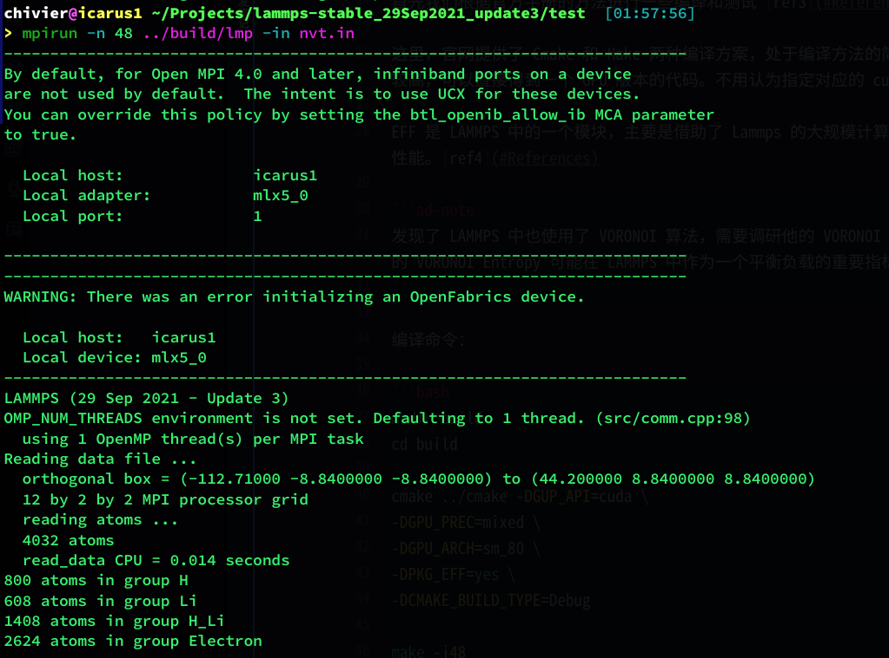
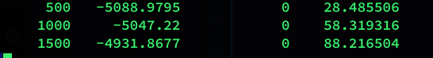
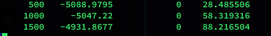
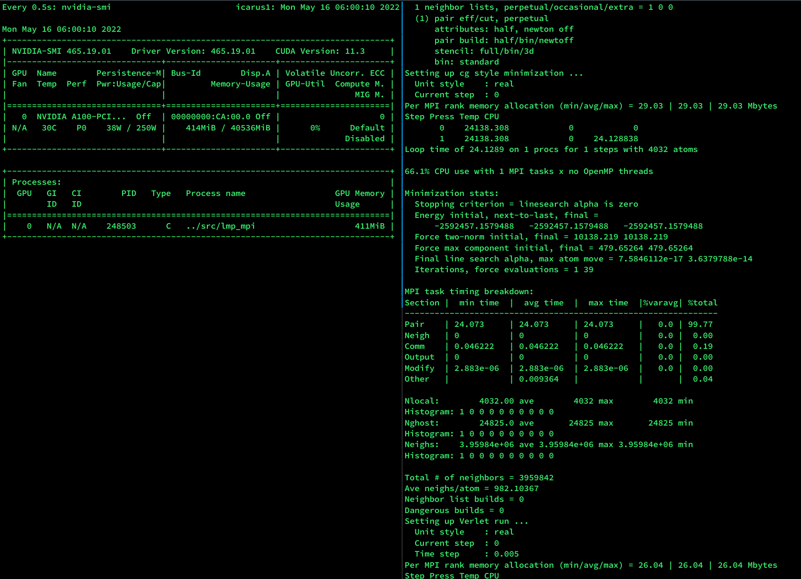
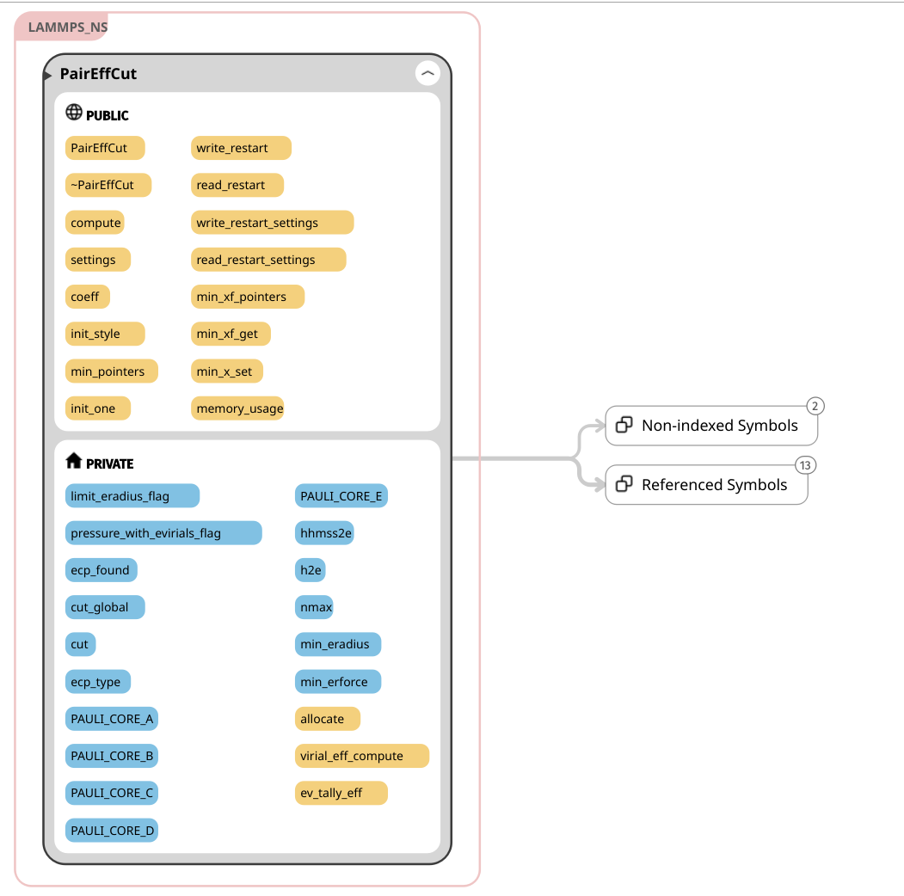
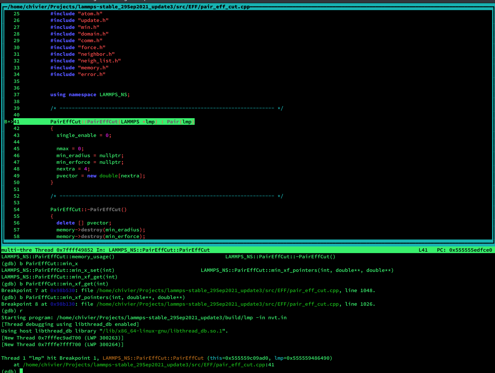

2205-Lammps-EFF GPU version 开发笔记1
对于 LAMMPS 的 EFF 模块进行整理分析，目标是开发出 GPU 版本。
0 背景调研
0.0 LAMMPS 项目结构和编译方法
Lammps 官网提供了相关资料：ref1
经过和李森师兄进行商讨分析，希望尽可能多利用近年来 Lammps 在 GPU 平台上的优化和其他项目工具的辅助。选择版本为：lammps-stable_29Sep2021_update3 ref2
之后我们对如下的问题进行整理和分析：
- Lammps 的项目结构是怎样的，EFF 是什么
- Lammps 的 GPU 版本如何编译，那些部分使用了 GPU 加速
- Lammps 如何运行起来
- 如何使用 Cuda 对程序进行优化，其他的 Cuda 代码负责了什么功能
- 针对我们的算例，我们如何获取函数热点
- 能否摆脱 Lammps 框架，单独提取 EFF 部分使用 Cuda 进行编程操作
0.1 Lammps 编译
首先我们根据官方手册的方法进行一些编译和测试 ref3
这里，官网提供了 Cmake 和 Make 两种编译方案，处于编译方法的简单性，我暂时选择了 CMake 进行编译和测试，效率较高，可以直接得到一个 GPU 版本的代码。不用认为指定对应的 cuda 环境变量。
EFF 是 LAMMPS 中的一个模块，主要是借助了 Lammps 的大规模计算框架的便利性，提升 Electron Force Field 的计算性能。ref4
1 | |
编译命令：
1 | |
0.2 GPU 版本编译和运行
在李森师兄的指导下，成功的跑起了 LAMMPS 中的 example, 也成功的执行了张师兄给我的算例。
分析测试如下：
 这里成功的启动了程序，也可以发现 mlx5_0 的卡槽，但是不能正常的使用 GPU。这里需要对程序进行更改。 这里无法成功启动 GPU。所以之后计算开始使用 CPU 和 mpi 进行。

此处可以正常进行计算，四列分别是：Step, Press, Temp, CPU
这里无法成功启动 GPU。所以之后计算开始使用 CPU 和 mpi 进行。

此处可以正常进行计算，四列分别是：Step, Press, Temp, CPU
0.3 GPU 问题处理 1
1 | |
之前主要报错信息位于此处：
问题原因 mpich 不支持 GPU 的并行，无法查询设备。
解决尝试 1
更换 openmpi 的 GPU 编译方案。手动编译 openmpi 的 GPU 版本，方案参考：ref5
首先编译 gdrcopy ref6
编译命令:
1 | |
补充，如果此处 prefix 指定为自己的路径之后可以不需要 sudo 权限
结果失败，在 sanity test 中报错为:
1 | |
更新 PATH LD_LIBRARY_PATH 之后恢复正常。
下一步编译 UCX
参考版本：UCX1.12
1 | |
由于测试机器是单卡，暂时砍掉 gdrcopy 的测试。
推荐方案：
1 | |
之后相应的更新环境，开始编译 openmpi
1 | |
现在返回测试，报错依然存在。
解决尝试 2
分析问题还是在 openmpi 的 ib 驱动上，这里更换版本为 1.10 的 ucx。理由参考 Nvidia a100 进行 HPL 测试时使用的库版本:
https://catalog.ngc.nvidia.com/orgs/nvidia/containers/hpc-benchmarks
首先自己编译 libcheck, 从 gdrcopy 重新开始：ref7
1 | |
如果这里使用 sudo 之后可以解决，重新使用：
1 | |
之后在编译的时候 ld 可以找到 lgdrapi 了，非常顺利，这里巨大进步，进入 ucx 步骤，同上，无问题。
进入 openmpi 步骤，同上。
报错同上。
解决尝试 3
使用 intel mpi, 其余步骤一样，解决。
成功空占了 GPU
0.4 GPU 问题处理 2
在多次尝试的时候发现了第二套解决方案，mpi 不使用 intel 的版本，但是编译的时候使用 makefile 进行编译。
此方案可行，测试无误，虽然会报和之前一样的报错，即：
1 | |
但是 GPU 确实可以成功启用。预计此方案在通信性能上会有一定的损失，但此损失可以接受。
1 模块分析
1.1 EFF 代码逻辑测试工具准备
- 使用 Sourcetrail 建立代码逻辑
- 使用 gdb 进入调试
1.2 EFF 的模块初步分析
首先，Lammps 是一个组件模式的应用，所有的部件都是通过 Lammps 的 main 对读入文件进行分析进行处理的。我们处理的方法是通过 ref: lammps-add-module 使用 pair_style 调用构建类。
至此，开发前提出的 6 个问题都得到了回答：
- Lammps 的项目结构是怎样的，EFF 是什么
- 模块化，每一个独立模块内部构建类
- EFF 是 Lammps 计算 Electron Force Field
- Lammps 的 GPU 版本如何编译，那些部分使用了 GPU 加速
- Lammp GPU 编译方法见 [[#0 3 GPU 问题处理 1]] , [[#0 2 GPU 版本编译和运行]]
- GPU 主要为： short-range long-range three-bosy 三种势能计算提供加速。作用有限。
![[Pasted image 20220516144211.png]]
- Lammps 如何运行起来
- mpirun + 对应参数实现 CPU 运行
- mpirun -np 1 ../src/lmp_mpi -sf gpu -pk gpu 1 -in nvt.in 实现 GPU 运行
- 如何使用 Cuda 对程序进行优化，其他的 Cuda 代码负责了什么功能
- 将原来的 C 代码替换成 Cuda 代码，链接统一处理
- 参考 libgpu 的编译方法
- 针对我们的算例，我们如何获取函数热点
- vtune 分析即可，因为 eff 不使用 GPU, 没有必要使用 gprof
- 能否摆脱 Lammps 框架，单独提取 EFF 部分使用 Cuda 进行编程操作
- 不可以，目前为止的输入文件中需要借助 lammps 处理的部分还是占据大部分的，不方便进行处理。
- EFF 部分的 GPU 优化目前为止并没有流行的版本，可以考虑以此写文章
1.3 代码阅读
根据框架首先找到模块入口。结合调用关系，设置断点：
为 PairEffCut 设置即可。
可以进入断点进行测试。
下一步目标：
- 测试 EFF 模块的热点（进行中）
- 替换 EFF 的部分代码，测试插入 cuda 代码
References
- 1 https://www.lammps.org/
- 2 https://codeload.github.com/lammps/lammps/tar.gz/refs/tags/stable_29Sep2021_update3
- 3 https://docs.lammps.org/Manual.html
- 4 https://www.lammps.org/movies.html#eff
- 5 https://www.open-mpi.org/faq/?category=buildcuda
- 6 https://github.com/NVIDIA/gdrcopy
- 7 https://github.com/libcheck/check#installing
- github-lammps-gpu https://github.com/Roy-Kid/lammpscn/issues/8
- lammps-add-module https://docs.lammps.org/Modify_overview.html